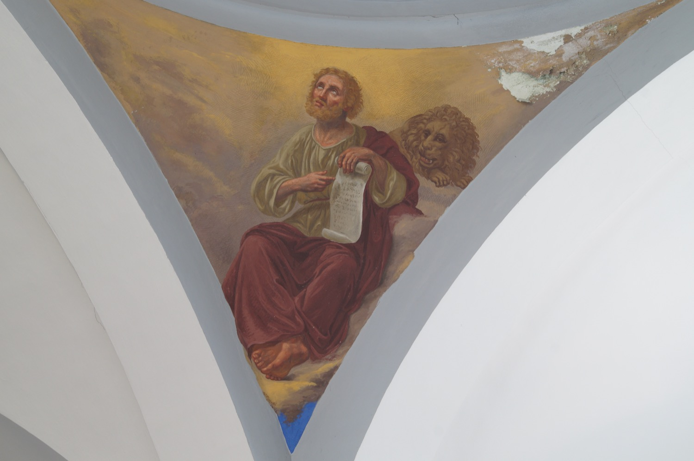

San Marcos no fue uno de los doce apóstoles, pero escribió el segundo Evangelio canónico, seguramente a partir de la predicación de san Pedro. Fue colaborador de san Pedro en Roma y obispo de Alejandría, donde murió mártir.
En este fresco del año 1863, el pintor italo-mallorquín Francesc Parietti Rigo lo representó con un pergamino que simboliza su papel como evangelista y acompañado de un león, que es su símbolo en el tetramorfos, la representación simbólica de los cuatro evangelistas. El motivo es que su Evangelio comienza hablando de Juan Bautista, identificado con la “voz que clama en el desierto” anunciada por el profeta Isaías. Esta voz se asocia al rugido del león. El león, además, simboliza la Resurrección, tema central del Evangelio de san Marcos, porque, según una creencia antigua, puede devolver a la vida a sus cachorros con su voz.